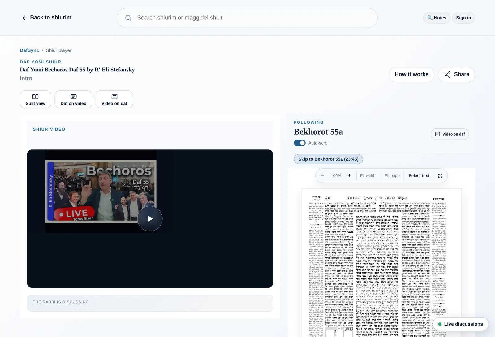
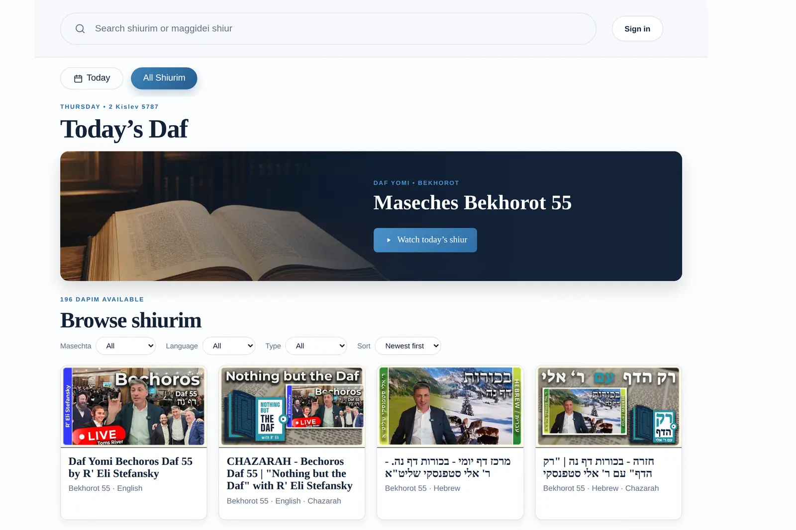
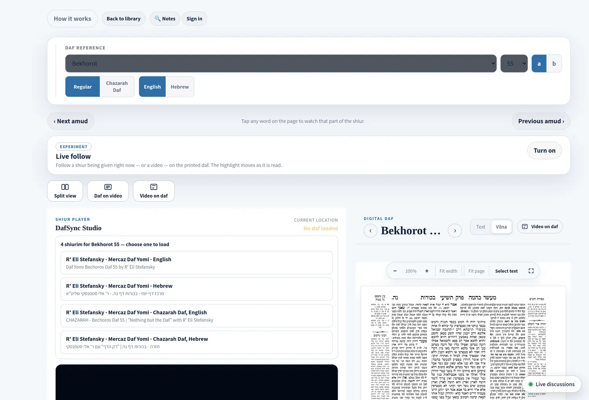
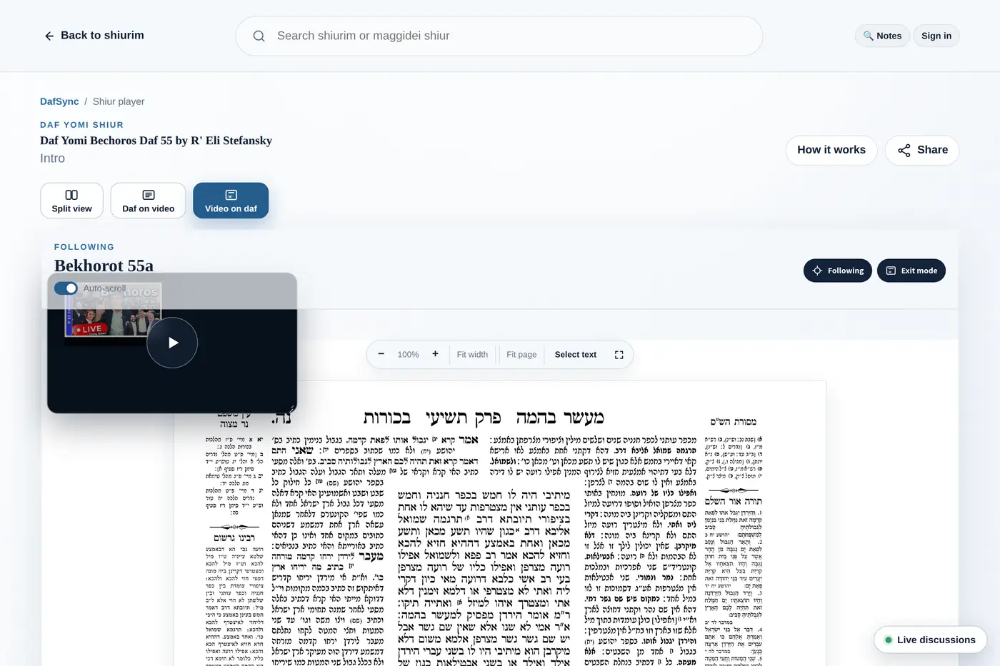
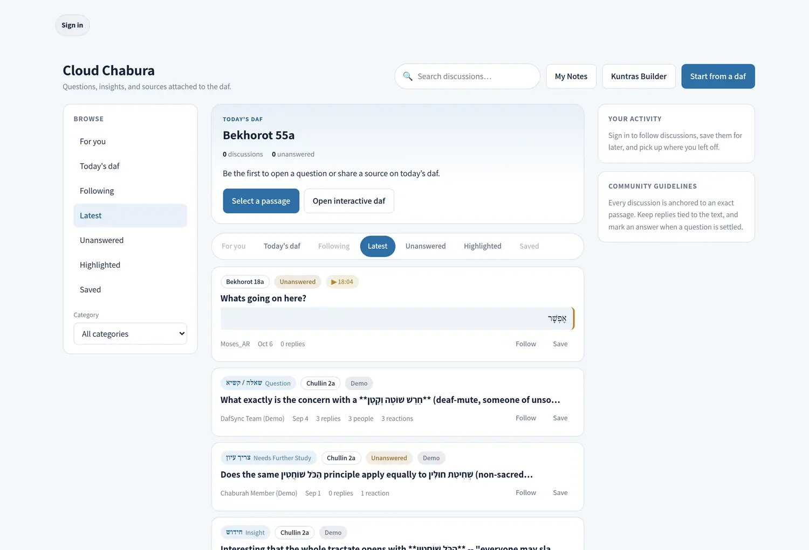

Daf Yomi, word by word
The shiur and the daf, together.
DafSync plays video shiurim from Mercaz Daf Yomi beside the Talmud page, synced word by word. Tap any word to jump to that moment. As the rabbi reads, the highlight follows.
- English and Hebrew
- Regular and Chazarah
- Tap a word, hear that line

How it works
Three steps, then you are on the daf.
The same idea runs through every shiur: the video and the words stay locked together.
-
01
Choose a daf
Open Today’s Daf, browse the library, or point your camera at a printed page.
-
02
Follow the reading
The highlight moves across the words as the shiur plays. Auto-scroll can keep that place in view.
-
03
Tap any word
The video jumps to that moment. Vaater skips ahead to the next synced phrase.
Home
Today’s Daf, and the whole library.
The home page leads with the day’s daf and a Watch today’s shiur button, then the shiurim underneath it.
- Search shiurim or maggidei shiur.
- Filter by masechta, language (English or Hebrew), type (Full length or Chazarah), and sort newest or oldest first.
- Maggidei Shiurim lists the teachers the site follows: R' Eli Stefansky (Mercaz Daf Yomi) and R' Sruly Bornstein (Lakewood Daf Yomi).

Interactive Daf
The page itself is the remote.
Pick a masechta and daf, then Regular or Chazarah Daf, in English or Hebrew. A line under the picker says it plainly: tap any word on the page to watch that part of the shiur.
- Text, or the Vilna page.
- Zoom, Fit width, Fit page, and Select text.
- Previous amud and Next amud, and amud a or b.
- “The rabbi is discussing” marks the current place. Auto-scroll follows along.
- Experiment Live follow: follow a shiur being given right now — or a video — on the printed daf. The highlight moves as it is read. Turn it on from this page, from the microphone, tab audio, or a video transcript.

The player
Three ways to watch.
Open any shiur and choose how the video and the daf share the screen. The same controls travel with you: Vaater, speed (0.75×, 1×, 1.25×, 1.5×, 2×), Skip to the daf, Notes, and Share.

Cloud Chaburah
A discussion, pinned to the words.
Questions, insights, and sources attached to the daf. Every discussion is anchored to an exact passage. Keep replies tied to the text, and mark an answer when a question is settled.
- Browse For you, Today’s daf, Following, Latest, Unanswered, Highlighted, and Saved.
- Filter by category — Question, Insight, Difficulty, Explanation, Answer, Source, and others.
- Follow a discussion or Save it. Search across the feed.
- On a thread, the keyboard: / search, r reply, u first unread, j k next and previous branch, ? the shortcut list, Esc close, Ctrl+Enter post.

Around the daf
Notes, a kuntras, your profile, and a camera.
These stay next to the learning, not in a separate app. My Notes and Kuntras Builder are also one click from Cloud Chaburah.
My Notes
Everything you’ve written, across every daf — private by default. Search your notes, switch between Notes and Documents, filter by category and visibility, or import a file.
Open My NotesKuntras Builder
Assemble your notes and writing into your own pamphlet — private, unlisted, or fully public. Public kuntrasim can be searched by anyone.
Open Kuntras BuilderYour Profile
Display name and avatar: how you appear across DafSync and Cloud Chaburah. Sign in to edit them. The account menu on the home page opens Edit profile.
Edit profileDaf Scan
Point your camera at the header, above the Gemara text, and DafSync opens that daf. You can also choose a photo, or use photo scan instead.
Experiment Full page is a testing mode. The usual scan is the header strip.
Open Daf ScanLive follow
Experiment Follow a shiur being given right now — or a video — on the printed daf. The highlight moves as it is read. Turn it on from the Interactive Daf.
Try it on the dafLive discussions
While a shiur or the Interactive Daf is open, Live discussions sits on that daf. The same conversations live in Cloud Chaburah, still tied to the passage.
Open Cloud ChaburahBegin
Open today’s daf and tap a word.
The library, the Interactive Daf, and Cloud Chaburah are all one tap from here. English and Hebrew shiurim are both on the page.